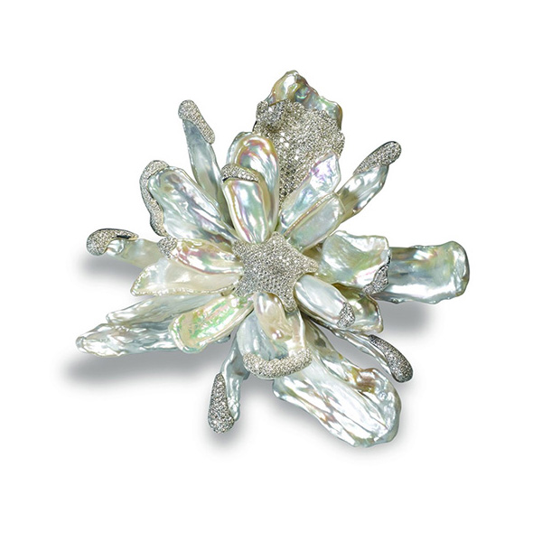
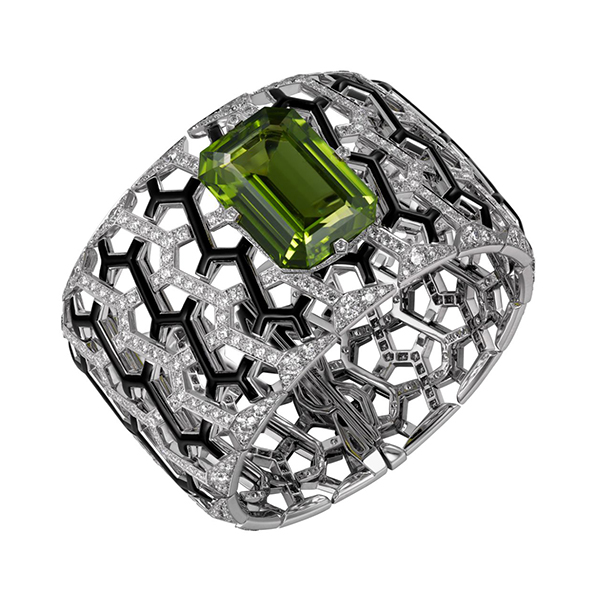

May
June
July
August
Birthstones
May - August
祖母綠 Emerald
祖母綠寶石自歐洲古世紀即被視為高貴神聖之代表，在埃及祖母綠象徵生育與再生，是埃及豔后最鍾愛的寶石；因為它的綠會隨著光線微妙地改變，就像女神充滿靈動的眼睛，生動地發出柔和又濃艷的光輝。祖母綠也因而被更尊稱為“獻給維納斯的寶石”。在16世紀之前只有皇室貴族能擁有。
珍珠 Pearl
珍珠，是大自然的璀璨奇蹟，更如夜空的明月落入凡塵，明潔圓潤。 珍珠英文由拉丁文而來，意「高貴大方」。自古珍珠一直被認為是諸神對大地的祝福。 文藝復興時期波提切利名畫「維納斯誕生」， 描繪維納斯女神徐徐張開一扇巨貝，慢慢浮出海面，身上無數水滴頃刻化成粒粒潔白的珍珠，栩栩如生。

紅寶石 Ruby
紅寶石的英文為Ruby，源於拉丁文“Ruber”，意謂紅色的，在聖經中紅寶石是所有寶石中最珍貴的。 寶石權威 Eduard Gubelin 這麼描述紅寶石“火焰般燃燒的烽火臺”，炙熱的火紅色使人們總把它和熱情、愛情聯繫在一塊，被譽為“愛情之石”，象徵著熱情似火。
橄欖石 Peridot
八月生日石橄欖石因顏色如橄欖而得名。礦物學名稱為橄欖石 Olivine，是一種鎂與鐵的矽酸鹽，為地球地表下最常見的礦物之一；運用在珠寶上的寶石級橄欖石則稱為貴橄欖石 peridot ，直接沿用法文 péridot 一詞。橄欖石的顏色從淡黃綠至亮麗的綠色和褐綠色均有。

32435